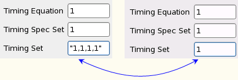
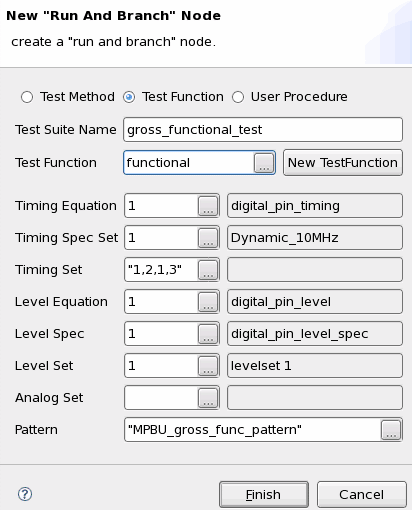

Setting up a multiport testsuite
About this task
Setting up a multiport test suite can be divided into three parts:
- Specifying timing related sets.
This part contains multiport steps and is discussed below.
- Specifying level related sets.
This part does not include any multiport specific steps. You choose a level specification, which automatically determines a level equation set, and you choose a level set.
- Specifying a multiport burst label.
For multiport tests you have to specify multiport burst labels.
Timing related sets
Specifying timing related sets for a multiport setup in the New RunAndBranch Node Wizard window is slightly different from doing so for a single-port setup.
The difference is related to the number of equations and wavetables associated with a multiport timing specification as part of the port timing settings. This implies that a call to a timing specification is all that is needed and a call to an equation is no longer necessary.
In addition to the specification, the timing sets used for each equation need to be listed in the New RunAndBranch Node Wizard window. The call to timing sets has a different syntax than in non-multi-port setting.
Level related sets
Since multiport setup does not have any impact on the level setup, the level equation set, level spec set and level set are specified in the corresponding input fields in the same way as in a single-port setup.
Multiport burst label
The multiport burst label specified in the New RunAndBranch Node Wizard window contains the ports and their associated port bursts as well as information on the ports' execution modes (sequencer synchronized or asynchronous).
Procedure
- Insert a test suite into the testflow as in a single-port setting.
- To specify the timing setup for the multiport application, in the New
RunAndBranch Node Wizard window, enter the numbers of the timing setup
components.
Type a sequence of timing set numbers in quotes into the Timing Set field, for example, "1,2,1,3".
Note The sequence of the timing set numbers corresponds to the port sequence indicated by order in the port list in the Spec Tool.With the timing port sequence, the timings sets "1,2,1,3" are mapped as follows to the port:
- Port 1 -> timing set 1
- Port 2 -> timing set 2
- Port 3 -> timing set 1
- Port 4 -> timing set 3
If the timing set number is the same for all ports, the string of timing set numbers can also be replaced by a single digit, for example:
"1,1,1,1" => 1

- Fill in the level information as in a non-multiport setting.
- Type a multiport burst label in the Pattern text box, for example, MPBU_gross_func_pattern or identify the executable label from the available list of labels when the Pattern text box is selected. Note that non-multiport (default patterns), port patterns and multiport labels are shown in the list. Port patterns cannot be executed as stand-alone patterns. For this reason, is recommended to follow a user or company -defined nomenclature for vector ports for easier selection of default or multiport burst labels.
Results
The following figure illustrates the complete setup of the test suite:

The combination of multiport with non-multiport settings is acceptable. This means that multiport timing can be used with a default port vector label and vice versa. The application is related to the number of available resources and the level of effectiveness that can be applied to resource utilization.
Functional changes
- Introduced before SmarTest 6.3.2